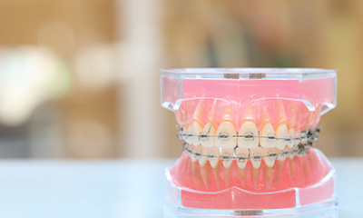
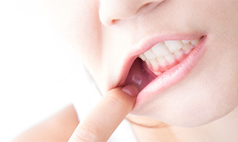

- 立川の歯医者「たけだなおや歯科クリニック」TOP
- 矯正歯科・小児歯科
当院では保険診療を中心に、幅広い年代の患者さんが安心して受けられる歯科医療をご提案しています。こちらでは立川市の歯医者「たけだなおや歯科クリニック」の矯正歯科・小児歯科をご紹介します。矯正治療の初回相談は無料でうけたまわりますので、まずはお気軽にご相談ください。
歯並びを整えて、
キレイに、健康に
～矯正治療～
矯正のエキスパートが提案する
「しっかり咬む」ための矯正治療

当院では、歯並びの見た目をキレイにするということ以上に、咬み合わせを整えることを考えた矯正治療をご提案しています。「しっかり咬めるようにする」ための矯正治療です。そのために、まずはカウンセリングでじっくり患者さんと話し合うことを大切にしています。
患者さんの矯正治療を担当するのは、月1回当院で診療を行う矯正の専任医師。矯正のプロの視点から、主訴、ご要望を十分に把握した上で、的確にアドバイスいたします。もちろん無理に治療をおすすめするようなことはありません。
初回のご相談は無料でうけたまわります。治療に関しては1回1回手を抜くことなく、全力で臨みますのでどうぞご安心ください。現時点で持っている技術・知識・経験を、すべて患者さんの治療にフィードバックします。
乱れた歯並びが及ぼす悪影響とは？

当院では「しっかり咬めるようにすること」を大切に、矯正治療を進めています。見た目を良くすることは矯正治療の目的の一つではありますが、歯並びの乱れが及ぼす影響は見た目だけにとどまりません。乱れた歯並びは、全身の健康にも悪影響を及ぼします。
歯並びが乱れてしっかり咬むことができなければ、消化器官に負担がかかります。また咬み合わせが悪いために顎関節のトラブルが起きたり、咀嚼筋に疲労がたまってカラダ全体のバランスが崩れてしまったりすることも。乱れた歯並びは歯みがき時のみがき残しの原因にもなるため、虫歯や歯周病のリスクも高まります。
矯正治療によって歯並び・咬み合わせの乱れを改善することは、こうした悪影響を避け、全身の健康を守ることにつながるのです。
当院と一緒に、お子さんの
歯を守っていきましょう
～小児歯科～
「たけだなおや歯科クリニック」では、お子さんの診療にも対応しております。お口のチェックや治療のアドバイス、矯正治療（咬合誘導）を行っておりますので、お子さんのお口のお悩み・疑問はいつでもお気軽にご相談ください。
どうしてもお子さんが歯医者で泣いてしまったり、お口を開けることを嫌がったりする場合、また重度の症状により当院では対応が難しい場合などは、近くにある小児歯科専門医がいるクリニックをご紹介いたします。